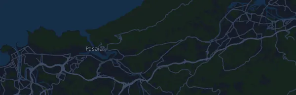

Behobia – San Sebastián 20,2 km
- Distance
- 20,2 km
- Højdemeter
- ↑ 293 m
- Højeste punkt
- 100 m o.h.
- Underlag
- Vej
- Karakter
- Let kuperet
Højdeprofil
Forbered dig med Mila
Mila er en løbecoach i en app. Lægger du et løb ind i din plan, planlægger coachen ugerne frem til start efter din form og giver dig en tidsprognose og en plan for tempo, væske og energi på ruten.

Den rette træning. Den rette dag.
Ruten

Om ruten
Behobia – San Sebastián er et vejløb på 20,2 km i Behobia, Spanien. Ruten har 293 højdemeter stigning og 287 højdemeter fald, 15 m pr. km, og regnes dermed som let kuperet. Det højeste punkt ligger 100 m o.h. og det laveste 0 m o.h.
Den største stigning begynder ved km 5,0: 84 højdemeter på 2,4 km med 3,6 % i snit, op til 100 m o.h. I alt har ruten 3 stigninger på mindst 25 højdemeter; den sidste begynder ved km 14,7.
I Mila-appen beskriver coachen ruten i detaljer på dit sprog og planlægger dit tempo og din energi til den.
Stigninger
| Begynder ved | Længde | Højdemeter | Hældning | Top (m o.h.) |
|---|---|---|---|---|
| km 0,5 | 2,9 km | 36 m | 1,2 % | 45 |
| km 5,0 | 2,4 km | 84 m | 3,6 % | 100 |
| km 14,7 | 2,2 km | 42 m | 1,9 % | 56 |
Tempotabel
Behobia – San Sebastián 20,2 km på 1:45:00 – tid pr. km og mellemtider
5:13 pr. km · km 5: 26:03 · km 10: 52:05 · km 15: 1:18:08 · mål: 1:45:00
Behobia – San Sebastián 20,2 km på 2:00:00 – tid pr. km og mellemtider
5:57 pr. km · km 5: 29:46 · km 10: 59:31 · km 15: 1:29:17 · mål: 2:00:00
Behobia – San Sebastián 20,2 km på 2:15:00 – tid pr. km og mellemtider
6:42 pr. km · km 5: 33:29 · km 10: 1:06:58 · km 15: 1:40:27 · mål: 2:15:00
Behobia – San Sebastián 20,2 km på 2:45:00 – tid pr. km og mellemtider
8:11 pr. km · km 5: 40:55 · km 10: 1:21:51 · km 15: 2:02:46 · mål: 2:45:00
Tiderne forudsætter et jævnt tempo hele vejen. Det er ren regning, ingen prognose: på stigninger, i trængsel og ved væskedepoter svinger tempoet.
Ofte stillede spørgsmål
Hvornår løbes Behobia – San Sebastián 20,2 km?
Behobia – San Sebastián 20,2 km løbes søndag den 8. november 2026. Tjek dato og starttid hos arrangøren.
Hvor langt er Behobia – San Sebastián 20,2 km, og hvor mange højdemeter er der?
Løbet er 20,2 km langt med 293 højdemeter stigning og 287 højdemeter fald. Det højeste punkt ligger 100 m o.h.
Hvordan er ruten på Behobia – San Sebastián 20,2 km?
Ruten regnes som let kuperet, med 15 højdemeter pr. km i snit. Den har 3 stigninger på mindst 25 højdemeter; den største begynder ved km 5,0: 84 højdemeter på 2,4 km. Ruten går fra start til et mål et andet sted. Underlaget er vej.
Hvordan fordeler jeg farten på Behobia – San Sebastián 20,2 km?
Gå efter en jævn indsats frem for et jævnt tempo: lad farten falde på stigningerne, hent den igen, når det flader ud, og hold igen de første kilometer. De største stigninger begynder ved km 0,5, km 5,0 og km 14,7. I Mila får du en tempoplan til netop denne rute efter din egen form.
Flere løb som dette
Flere løb i nærheden
- XXII Cross Internacional de Atapuerca – Absoluto hombres (7,837 km)22. november 2026 · Atapuerca, Spanien
- Maratón Valencia Trinidad Alfonso Zurich 42,2 km6. december 2026 · Valencia, Spanien
- Nationale-Nederlanden San Silvestre Vallecana (carrera popular 10 km)31. december 2026 · Madrid, Spanien
- Hyundai Mitja Marató Barcelona by Brooks 21 km14. februar 2027 · Barcelona, Spanien
- Zurich Maratón de Sevilla 42,2 km21. februar 2027 · Sevilla, Spanien
- Transgrancanaria Classic 125 km26. februar 2027 · Las Palmas de Gran Canaria, Spanien
Forbered dig med Mila
Den rette træning. Den rette dag.
Oplysningerne kommer fra rutefilen og arrangørens information. Tjek dato, starttider og regler hos arrangøren.
Mila er ikke tilknyttet, sponsoreret af eller godkendt af arrangøren eller løbets sponsorer. Navne og varemærker tilhører deres ejere. Arrangør eller rettighedshaver? Bed om ændring eller fjernelse